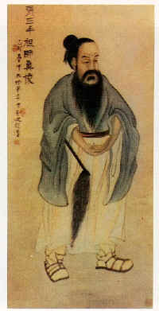
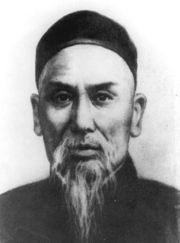

Si racconta che nel XIX secolo la Famiglia Chen, nella provincia di Ho Nan, praticasse uno stile proprio di T'ai C'hi Chuan e che questo stile fosse stato tramandato solamente ai familiari come utile sistema di difesa del villaggio in cui vivevano. Un uomo chiamato YANG LU CHAN (1799-1872), rimasto affascinato dalle tecniche marziali che riuscì ad osservare di nascosto, volle imparare il T'ai C'hi Chuan. Non essendo membro della famiglia CHEN usò un espediente per avvicinarsi al maestro: si fece assumere in qualità di servo di casa.
CHAN SAN FENG
Ideatore del T'ai C'hi Chuan
Ebbe così la possibilità di esercitarsi con gli allievi nelle normali lezioni e spiare nottetempo le pratiche riservate ai membri più stretti della famiglia. Nel tempo libero le ripeteva studiandole assiduamente, ma un giorno fu scoperto dalla famiglia. Si sa che le conseguenze a quei tempi avrebbero potuto essere quanto meno spiacevoli per l'ardito servitore, così per punizione fu costretto a battersi contro i migliori allievi della famiglia. YANG li batté facilmente e tutti rimasero ben impressionati dalle sue capacità e dalla passione per quell'arte. Decisero così di permettergli di continuare gli studi insieme a loro e da quel momento fu accettato come discepolo da CHEN CHANG XING che lo iniziò alle pratiche più segrete del T'ai C'hi Chuan.
YANG LU CHAN
Maestr fondatore del T'ai C'hi Chuan stile Yang